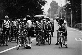
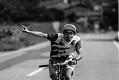
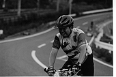
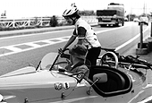
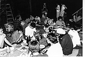

1997年8月3日
ついに「ツール・ド・信州」当日である。朝5時、参加者＆サポート＆撮影スタッフは、一人も欠けることなくジブリ前に集合。と思ったら、Dペイントの石井君が来ていない事が発覚。（実は石井君、寝坊をしてあわてて後を追ったのだが、サポート隊に連絡をとったところ、本隊とあまりに差が付きすぎてしまって、危ないからリタイアして、と命令が下り、しぶしぶ電車で山小屋へ向かったそうなのである）。

朝5時 参加者がスタジオ前に集合参加者に聞いてみると、一様に睡眠時間が短かったらしい。かくいう私も2時間位しか寝ていない。おまけに、前日ツール・ド・フランスを真似して、アルミホイルで小さく包んだサンドイッチセットを作ったのだが、それを全て冷蔵庫に忘れて来てしまい大ショック。と言っているうちに5時半となり、多摩川の稲城大橋までウォーミングアップのスタートである。
集団で走ると、格好だけはやたらときまっている。そしていよいよ6時、稲城大橋下を一斉にスタート。あっと言う間に高坂、斎藤、そして怪我してゆっくり走るはずだった野崎がダッシュで集団を引き離す。勝手にやって！という感じ。第二集団以降は思い思いのペースで走って行く。そして第一の難所大垂水峠で早くも最初のリタイアが…。CG部の片塰氏が、峠の頂上付近で突然体調不良に見舞われたのだ。ああ、デジぺの石井君といい、デジタル部門は今後何かある度に宮崎監督から「どうせデジタルをやってるヤツはすぐリタイアするから」と嫌味を言われるのは必定である。

居村さん 余裕の表情さてこれからリタイア続出か、と思われたこのレースだが、相模湖を過ぎても、大月を過ぎても何故かだれもリタイアをしない。みんなが「あと何人かリタイアしたら自分も止めよう」と互いに牽制しあっていたのである。また、宮崎監督が手配したビデオクルーがバイクや車にのってカメラを構えているものだからおいそれと自転車を下りるわけにはいかない。

力走を見せる奥田さんさて、狭くて一番危険と言われていた笹子トンネルを抜け、坂を下り終えると、次の関門灼熱地獄の甲府が待っていた。先頭集団は午前中のまだ涼しい時に通過したから良かったものの、遅い連中がここを通ったのが、一番暑い午後1～2時頃。気温は40度を超えていた。「よ～し。これで2、3人は確実にリタイアするぞ」と期待したのだが、ここでもやっぱり誰もリタイアせず各人がひたすら前へ前へと進んでいく。
このあたりからはもうほとんど惰性である。帰りに車で同じ道を通ったのだが、ほとんど記憶に残っていないのだ。さていよいよゴールも近くなってきた。国道から目標の交差点を曲がって一寸登ったらゴールはすぐだよ、と聞かされていたため、近づくにつれ精神的に高揚し始め、その交差点に差しかかった時には「やった、着いた」という気分になっていた。

三輪自動車車に乗って様子を見に来る宮崎監督ところが、真の地獄はここから始まっていたのだ。その「一寸登ったら」が実にきつい。交差点で終わりという意識があったため、そこでほとんどエネルギーを使い果たしていたのである。いやそれだけではない。本当に坂がきついのだ。とにかく自転車を押して登っていても、途中で息が切れてへたり込んでしまう。おまけにまたしても非情なカメラが我々を撮っている。途中でサポートスタッフが頭から水をかけてくれるので「あとどのくらい？」と聞くのだが、答えは必ず「そこを曲がったらもうすぐ」である。
後でサポートスタッフに聞いたところ「そうでも言わなきゃ全然前に進んでくれない」状況だったそうだ。この約5キロの急坂を登り切ってようやくゴール。参加18人中完走17人という予想以上の素晴らしい結果に終わったのである。ところでゴールしたはいいが、みんなもうヘロヘロ状態である。すぐさま用意された水風呂につかり、山小屋前に用意されたテーブルの前のござにへたりこむ者が続出。完走者平均、体重が3～4キロは減っていた。夕食はこの日のために組織されたジブリ料理班が焼き肉等を用意したが、結局疲れのためなかなか食も進まず、かなり余ってしまう事態となったのである。因みにレース結果は、1位が高坂希太郎氏の5時間50分、最下位は最年長日本テレビの奥田さんで規定時間ぎりぎりいっぱいの11時間55分であった。

| 日誌索引へ戻る |
| 「もののけ姫」トップページへ戻る |